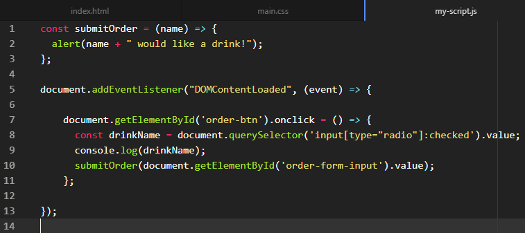
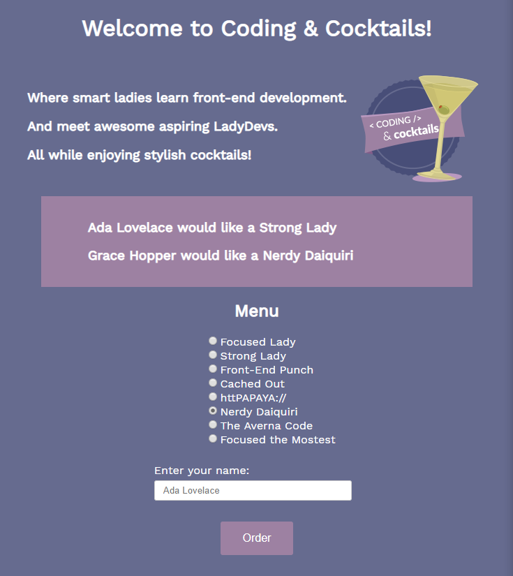
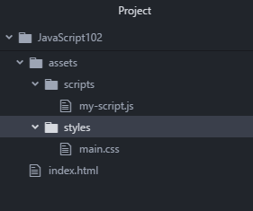
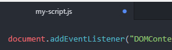

Expand this section to compare your work.
You can also compare your my-script.js file with our answer key if the image is too difficult to read.
We will start by practicing JavaScript fundamentals and diving deeper into DOM (Document Object Model) manipulation before we explore new concepts such as events and objects. JavaScript is one of many programming languages used for application development.
Tonight we will create an web application with interactive elements and dynamic content that looks like this:

Before starting the worksheet, please take a moment to review Setup instructions to ensure you have all the tools and workspace setup you need for tonight's work.
This section will help guide you through the following steps:
Using Chrome, download the zip file from the GitHub repository.
Extract the contents and copy the index.html and "assets" folder to "CodingAndCocktails/JavaScript102" folder. Your "JavaScript102" folder should contain the following files and folders:

If you don't have a "CodingAndCocktails/JavaScript102" folder, take a moment to set up your workspace.
Not sure how to extract the contents of the zip file?
Mac users: Double click on the downloaded file with the .zip extension
Windows users: Right click on the file with the .zip extension and choose "Extract All." Select the destination you would like to extract the files to.
Open the "JavaScript102" folder in Atom.
To open the folder in Atom, follow the instructions below:
Navigate to your "CodingAndCocktails" folder and select the "JavaScript102" folder
You can close all tabs that Atom displays. Open index.html and my-script.js located in the "assets/scripts" folder. We will use both files tonight.
We will use the atom-live-server package we installed to serve the index.html file. This package opens up the web page in your default web browser and reloads the page whenever you save files. Start the live server by selecting Packages atom-live-server. Select Start server. A browser tab will open.
If you don't have the atom-live-server package, take a moment to set up your workspace.
If the tab opens in another browser, copy the URL and paste it into a new tab in Chrome. The reload will automatically happen in Chrome.
If you get an access warning, click "Allow" to let atom-live-server serve the application.
We'll write a function that updates the DOM dynamically with text. Remember a function is a bit of code that takes input, process the input and returns some output - sort of like a coffee machine!
Using Atom, open my-script.js in the "assets/scripts" folder.
Two functions are already defined in the file: one function associated with the DOM content load completion event. That function accepts an event as the input parameter. The second function is included to handle the click event on the HTML element with the id of order-btn. The second function currently has no input parameters passed to it. Both functions are lacking code in the function body - let's get to adding some!
Find the onclick event handler on line 4. Place your cursor between the opening and closing curly braces (these: {}) and press Enter.
Your cursor will be on a new line in between those curly braces that denote the function body. Notice how Atom indents your cursor position as well. This is to help with code readability. Your code should now look similar to this:
document.getElementById('order-btn').onclick = () => {
};
The opening and closing curly brace signify the starting and ending boundaries for groups of code statements. All the code inside the curly brace are part of the same group. Code outside of the curly braces are not part of the group. In this case, all code inside the curly braces are part of a function and all code outside of the curly brace is not part of the function. You will see instructions to add code inside and outside functions tonights.
View the worksheet and the IDE (Integrated Development Environment - a generic term for where you write your code, Atom is serving as the IDE in our case) in split screen mode to make it easier to work through tonight's session. Check out the helpful tips in the Setup guide.
Add an alert with the message "Hi LadyDev!" inside the function body to verify we wired up the click handler correctly. Your click handler should look like this:
document.getElementById('order-btn').onclick = () => {
alert("Hi LadyDev!");
};
Save your file.
Every time you make a change, save the file.
The atom-live-server package will automatically refresh the Chrome tab to keep the app up to date with your saved work. Atom alerts you to unsaved work by displaying a blue circle in the tab:

Save the file by navigating to File Save or by using the keyboard shortcut cmd + s for Macs and ctrl + s for Windows. Refer to Helpful Keyboard Shortcuts.
In Chrome, click on the order button. Do you see the alert pop up?
If you don't see the alert pop up when you click the button, double check that you've saved your files and grab a mentor if you're stuck!
Great! We've got a form on our page that accepts user input to work with. Now that we know the click handler works, let's get the value of the form input!
In Atom, remove the alert code.
First we need to select the HTML element that represents the form input. In the onclick function body (that area inside the curly braces!), type document.getElementById('order-form-input').
Open the index.html file and take a look at line 70. You should see an HTML element for input with an id attribute of order-form-input. This is the element we just targeted in the previous step.
Need an HTML refresher? Grab a mentor or review the Coding & Cocktails HTML Slides or Worksheet!
Next, in the my-script.js file, ensure we get the value entered in that form input element by using the value property of the HTML element.
Your click handler function should now look like this:
document.getElementById('order-btn').onclick = () => {
document.getElementById('order-form-input').value;
};
Wrap the value of the form in the console.log() method to see what the value of the input is.
You could add another alert message, or log it out to the console to do so. Since we used the alert method already, try using console.log() here. Your onclick function body should look like this:
console.log(document.getElementById('order-form-input').value);
In Google Chrome, open the Chrome DevTools by using keyboard shortcuts cmd + option + i on Macs or F12 on Windows.
Enter text in the name form field and click on the order button. You should see your text write to the DevTools console. Leave DevTools open.
In Atom, place your cursor at the top of the my-script.js file and press Enter twice. Place your cursor back on the first line of the file and create a constant variable named submitOrder. This will be your new function's name.
const submitOrder
Next to the submitOrder variable, add an = sign to set your variable to some content. Type () => {}; to start your function definition.
In the open and close parenthesis for the area where you enter the input parameters for the function and add a single parameter called name as input to this function.
Wrap up the function structure by adding the open and close curly braces {} and a semi-colon to end the line of code. Your function should look like this:
const submitOrder = (name) => {};
You created a function named submitOrder that takes 1 parameter named name.
The click handler function needs to call our new submitOrder function instead of logging to the console. Replace console.log with submitOrder in the click handler function.
console.log code to
submitOrder(document.getElementById('order-form-input').value);
We are passing the value as a parameter to the submitOrder function. We can now access the value of the form input in the submitOrder function body using the variable name.
Inside the submitOrder function, add an alert on name to verify we wired it up correctly and save your work.
submitOrder function to
const submitOrder = (name) => {
alert(name);
};
In Chrome, try testing this out to see the alert pop up with the value you enter in the name field.
Notice we can leave the name blank. The value will be empty but the alert still displays with nothing inside.
Great! Now let's make the alert message a little more helpful by appending extra text to the name so it sounds friendly. We can do this using string concatenation. In the submitOrder function in Atom, edit the code for the alert message:
alert(name + " would like a drink!");
In Chrome, try adding your name and click the order button. Do you see your friendly sentence in the alert window?
You will use Atom to type code statements and Chrome to verify your work when your web page reloads. Don't forget to save my-script.js every time you type a code statement.
We retrieved an element from the DOM via its id. Now we'll retrieve the selected radio button value by its CSS selector string.
Let's retrieve the value of the selected drink by first creating the variable to hold the value. In my-script.js, inside the onclick handler above the call to the submitOrder function, declare a variable for the name of the drink using a descriptive name.
const variable named for the value it will hold, such as drinkName.
Your code will look like this
const drinkName
Last time we retrieved an element by its id using getElementById(). This time we'll use querySelector() to retrieve an element by CSS selectors. Set your variable equal to document.querySelector();.
There's different ways to access the DOM from JavaScript. Tonight we explore getElementById() and querySelector(). Sometimes it makes sense to define an id to an element so your code can access it easily. But as an application grows and the number of elements increases, having a way access elements without defining an id to each is powerful.
Below your query selector, write your variable out to the console so that we can see how this works.
console.log().
Your code will look like this
const drinkName = document.querySelector();
console.log(drinkName);
Now we need to find the CSS selector string for the radio button but first, let's take this querySelector out for a test run. Let's try grabbing the text in <h1> tag first. The querySelector method takes a string without the open and close brace (just like we did in the CSS session). Change your querySelector code to
document.querySelector('h1');
Need a CSS refresher? Grab a mentor or review the Coding & Cocktails CSS Slides or Worksheet!
Save your file. In Chrome, select a drink and press the Order button. Do you see your query selector write out to the console? Since we didn't specify that we only want the text, we see the entire <h1> HTML element.
How can we change our getElementById to use querySelector instead? Can we use getElementById to retrieve the text in the <h1>? Feel free to talk it out with your mentor. They love acting as a sounding board!
Time to get the selected drink! This time, the CSS selector string is a little more specific. In Atom, change the CSS selector string for your querySelector to 'input[type="radio"]:checked'.
Let's walk through this CSS selector string. The radio buttons are <input> elements with the attribute type="radio". Selectors use square brackets [] for attributes. Then we only want the selected radio button, which uses the pseudo-class checked. Selectors use colons : for pseudo-classes.
You can also write a style in the CSS file using this selector too!
Save your file. In Chrome, select a drink and press the Order button. Hrm... We see the HTML element not the drink name.Do you see your drink name write out to the console?
We can't get the selected drink name by id because we don't know which id is the selected drink. This is an example of the power of query selectors.
Let's get the drink name-- that's the value of the HTML element. In Atom, make your change and double check your work by saving your file and testing it out in Chrome.
value of the document.querySelector().
Your code will look like this
const drinkName = document.querySelector('input [type="radio"]:checked').value;
console.log(drinkName);
High Five!!
Nice job!!! Time to grab a drink and celebrate!

Compare your my-script.js against the answer key for your work so far. It might look a little different depending on spacing.
You can also compare your my-script.js file with our answer key if the image is too difficult to read.
What is a programming language video
MDN Reference: Document API's getElementById
MDN Reference: Locating DOM elements using selectors